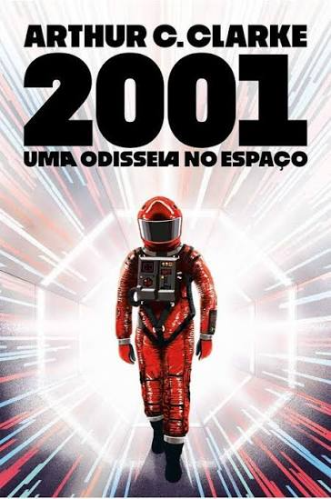
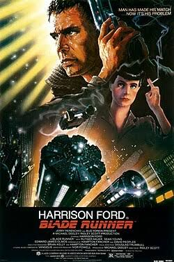
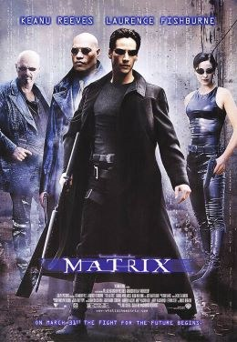
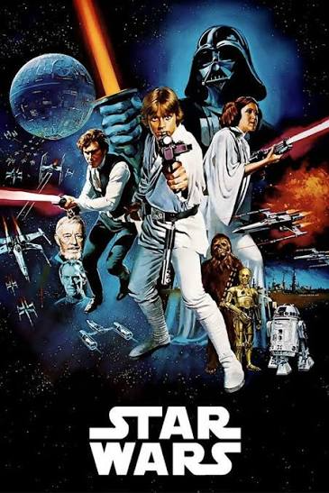
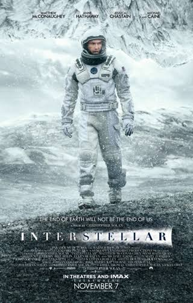

A ficção científica nasceu na literatura, com obras como Frankenstein (1818), de Mary Shelley, e os livros de Júlio Verne e H. G. Wells. No cinema, a origem está em Viagem à Lua (1902), de Georges Méliès, inspirado em Verne e Wells e reconhecido como o primeiro filme do gênero.
Metrópolis (1927), de Fritz Lang, levou o gênero ao longa-metragem com uma visão marcante de uma cidade do futuro. Décadas depois, 2001: Uma Odisseia no Espaço (1968) e Star Wars (1977) renovaram a ficção científica com novos efeitos especiais.
Conheça alguns dos principais subgêneros
Conheça alguns dos filmes mais icônicos do gênero




